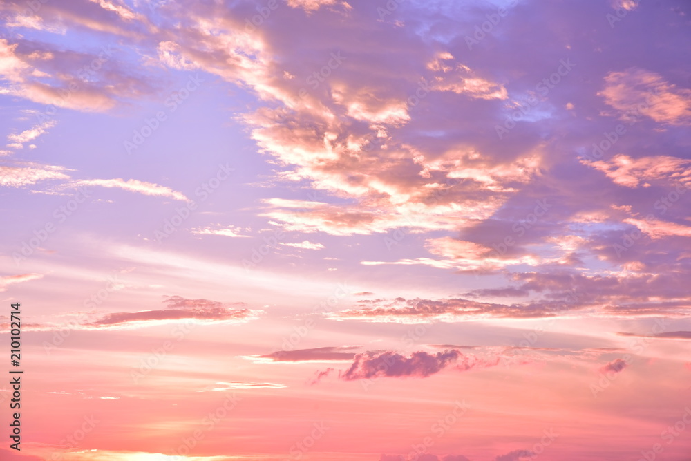
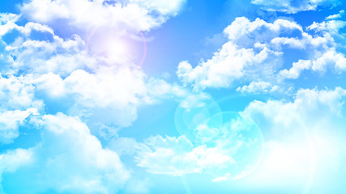
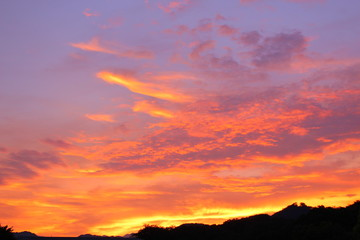
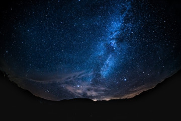

朝の空
朝焼けの美しい空。
朝の空の詳細
朝の空は、日の出と共に新しい一日が始まる瞬間です。特に晴れた日の朝焼けは、赤やオレンジ、ピンクの美しい色合いに染まり、幻想的な風景を作り出します。これは、大気中の微粒子が太陽光を散乱させるためです。朝の静けさと清々しさを感じながら、この景色を楽しむことができます。
昼の空
澄んだ青空。
昼の空の詳細
昼の空は、太陽が最も高く昇り、明るく澄んだ青空が広がります。この青空は、レイリー散乱と呼ばれる現象によって、青い波長の光が空全体に散乱されるためです。澄んだ青空は、活動的でエネルギッシュな一日の象徴でもあります。晴れた日の青空は、屋外での活動や景観を楽しむのに最適です。
夕方の空
夕焼けのオレンジ色の空。
夕方の空の詳細
夕方の空は、日の入りに向かうにつれて、赤やオレンジ、紫色に染まります。夕焼けは、太陽が地平線に近づくことで、光が大気中を長く通過し、青い光が散乱されるために起こります。この現象により、残った赤やオレンジの光が空を美しく彩ります。夕焼けの空は、一日の終わりを告げると共に、リラックスした時間を過ごすための自然の演出です。
夜の空
星がきらめく夜空。
夜の空の詳細
夜の空は、太陽が沈んだ後に広がる暗闇の中で、無数の星が輝きます。都会では光害により見える星の数は少ないですが、郊外や山間部では満天の星空を楽しむことができます。天の川や流れ星、星座など、夜空にはさまざまな魅力があります。夜の静寂と共に、広大な宇宙の神秘を感じることができます。
空の豆知識
- 空の色は、大気中の分子や微粒子による光の散乱によって決まります。昼間の青空は、レイリー散乱と呼ばれる現象によって青い光が散乱されるためです。
- 夕焼けや朝焼けが赤く見えるのは、太陽が低い位置にあるため、光が大気を長い距離を通過し、青い光が散乱されて赤い光が残るためです。
- 虹は、太陽光が雨粒の中で屈折し、反射し、さらに屈折して出てくることで生じます。光の波長によって異なる角度で屈折するため、色の帯が見えます。
- 雲は、空気中の水蒸気が冷やされて水滴や氷晶となり、集まったものです。雲の種類は、形状や高さによって異なります。